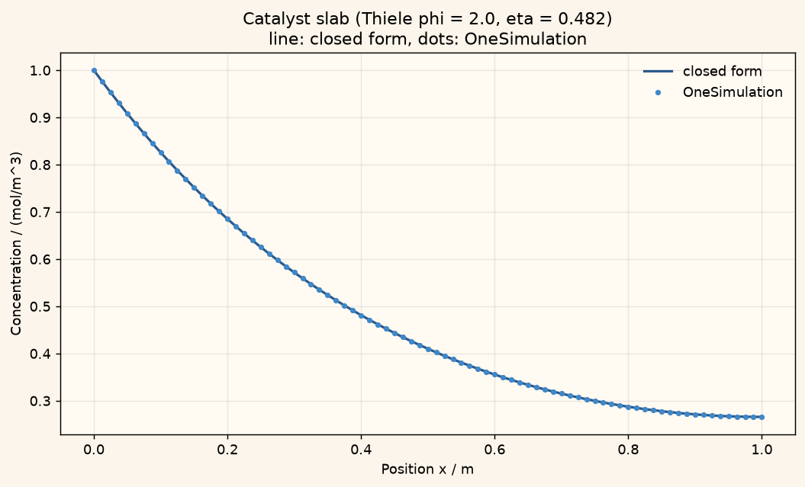

Docs › Examples › Example library › Diffusion-reaction in a catalyst slab
Reaction-diffusion · 1D
Diffusion-reaction in a catalyst slab
Diffusion with a first-order reaction in a catalyst slab, graded against the Thiele solution.
SteadyThiele modulusClosed-form check

What it computes
OneSimulation solves steady diffusion with a first-order reaction on a slab with a reservoir face and a sealed centre.
What it checks
The profile cosh(phi(1-x/L))/cosh(phi) and the effectiveness factor tanh(phi)/phi match the closed form.
What you need to run it. An installed, activated OneSimulation runtime (Python 3.13). As a student or course instructor, you have free access. Everyone else can start with the 7-day free trial. The notebook itself carries no key. These are numerical verifications against references, not experimental validation.